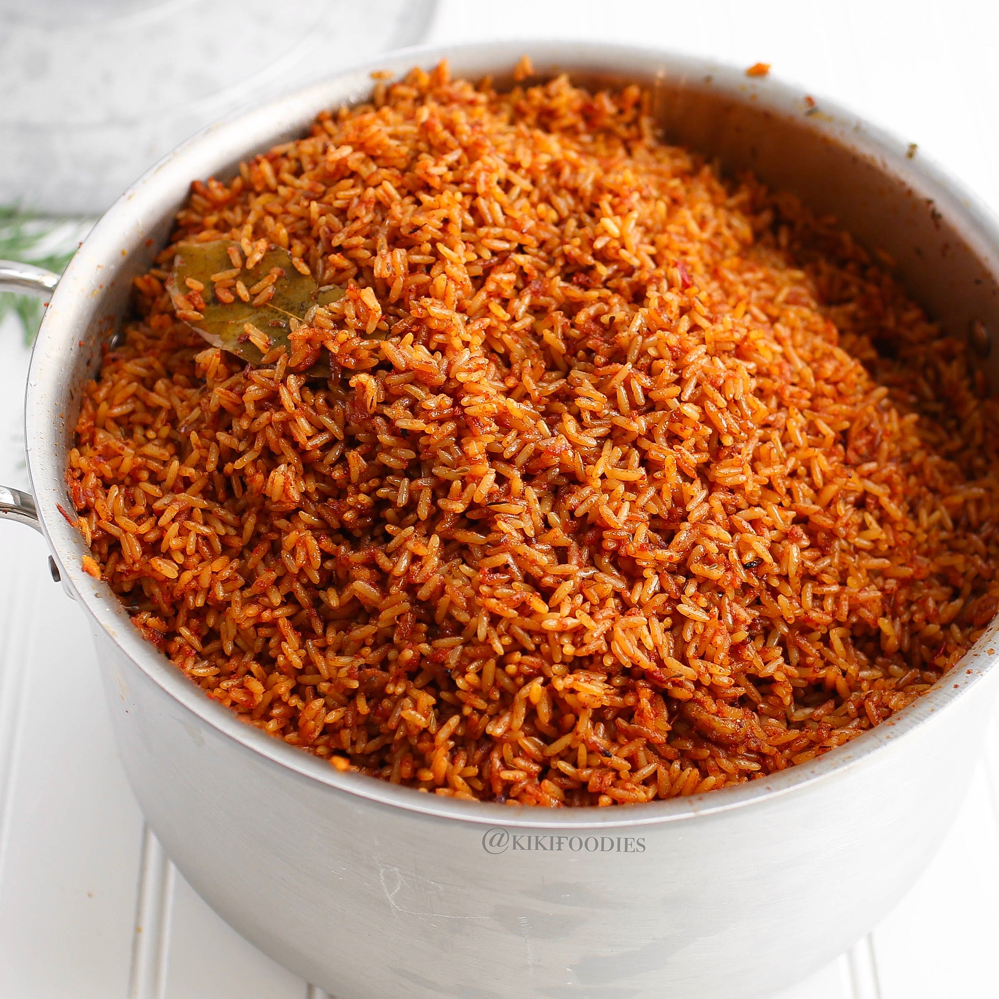

Jollof Rice

Description
This is a West African staple food eaten in countries like Nigeria and Ghana. Known for its spice and flavor, this delicacy is consumded from everywhere like parties, events, weddings and family gatherings
Ingredients
- Rice (4 cups)
- Chicken water
- Beef water
- Onions (12)
- Curry spice
- White pepper spice
- Coriander spice
- Thyme spice
- Bay leaf
Steps
- Pour the rice in the bowl
- Add chicken water, beef water, 4 cut onions
- Add 1 tablespoon of salt, 1 tablespoon of curry spice, 1/2 of white pepper spice, coriander spice and thyme spice and 6 pieces of bay leaves
- Pour hot water up to rice level
- Stir, heat up and wait for 30 mins
- Pour already-made stew in jollof rice. This will give the rice it's red color.
- Cut 4 more onions in and stir
- Wait for 15 mins
- Off heater and enjoy